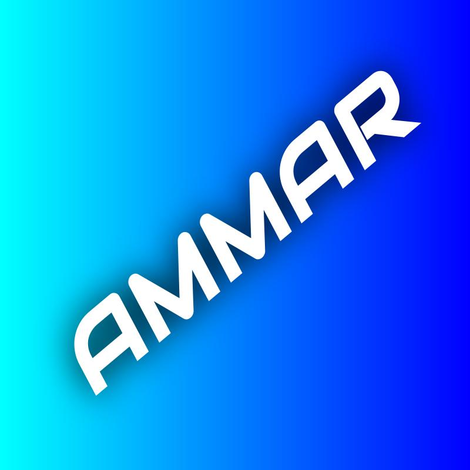

AmmarMohammed01
Projects
- Weekly
- JobApps
- Capstone: PCB Visual Defect Detection
- EPICS: Fabrication Lab Card Sign-in Tool Access System
- EPICS: UTD Office of Sustainability Water Bottle Counter System
About Me
- Graduated with B.S. in Computer Engineering at UTD
- I like building useful applications
- Recent hobby: Getting back into web-design.
- Interested in embedded systems
- Experience in IoT using Arduino Uno R3, Raspberry Pi, TI MSP432, ESP32, ESP8266
- Worked on full-stack development using Next.js and Vue.js: webpages, apis, databases
- Worked on database systems using MySQL, SQLite, and Prisma
- Programming Languages Used: C, C++, Python, Java, JavaScript
- Tools I Like: Neovim, Git/GitHub, Ghostty, iTerm2, LibreOffice, VSCode, Arduino IDE, Draw.io, KiCAD, TinkerCAD